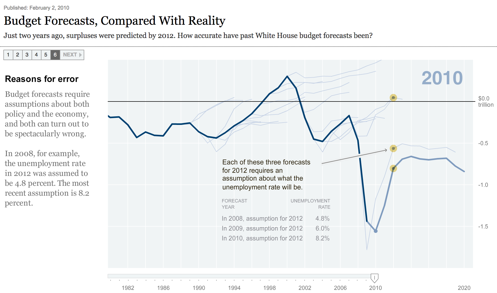
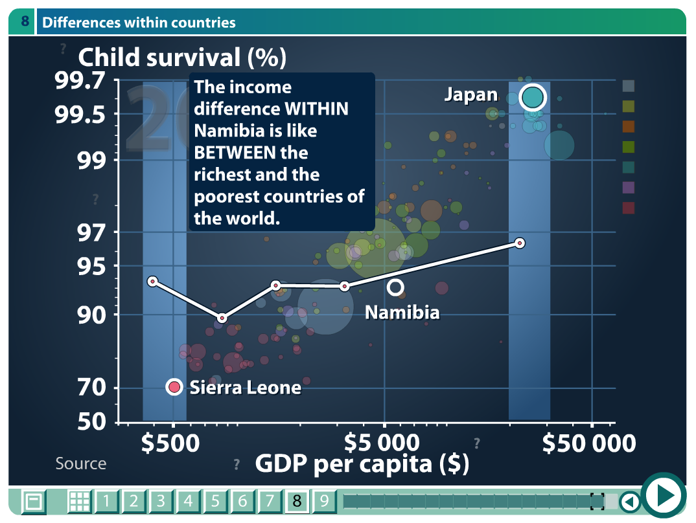

Telling Data Stories
Back To Top
What is the Oxford English Dictionary's definition of a narrative?
As written in the article, the Oxford English Dictionary (OED) defines the word Narrative as:
"An account of a series of events, facts, etc., given in order and with the establishing of connections between them."
OED has since made the definition more concise:
Noun: A spoken or written account of connected events; a story.
What is your favorite visualization among the examples in section 3? Explain why in a few words.
Amongst the five selected case studies presented by the authors, two stood out in particular. The White House Budget Forecast which - when compared to true outcome - gives an intruging and debatable insight to the undetering optimism of economists. There could be many interesting reasons for this behavior.

Budget Forecasts Visualization extract
Even more impressive, is the Human Developement Trends visualization, which - despite its outdated look - conveyed the most information. Without going into too much excruciating detail, the visualization gives plenty of room to explore while traversing a scripted story.

Human Developement Trends extract
Through the use of well-selected and evenly distributed examples, the visualization communicates central messages leaving plenty of room to pause, search for similair cases or even counter-examples. The author finds a sweet spot between overburdening the viewer with examples and leaving statistcal conclusions unexplained. Grouping the skillful story telling plot, with this vast data set and the well-crafted visualizations made re-enabling flash player every click worth it.
What's the point of Figure 7?
The goal of the entire paper is to systematically review the design [of visualizations]. The authors select 58 visualizations from online journals, business articles and viuslazation research papers and examine them in detail. The analysis is expressed in the form of the table shown in figure 7. The table, which is described as a "design space" shows the 58 visualization, where each carries certain charactersistics which it may share with other visualizations.